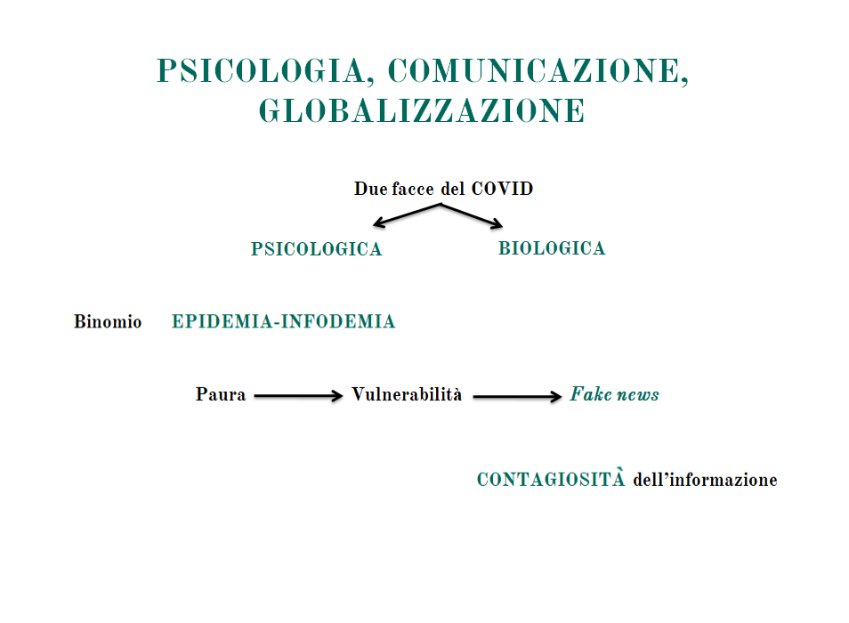
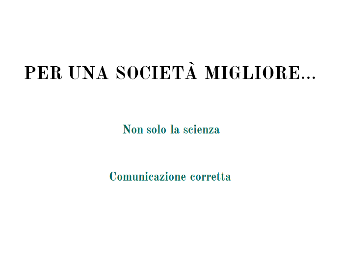

Giorgio Nardone, fondatore, insieme a Paul Watzlawick, del Centro di Terapia Strategica di Arezzo, è internazionalmente riconosciuto sia per la sua crea¬tività che per il suo rigore metodologico.
Simona Milanese, medico e psicoterapeuta, ricercatrice associata e formatrice del Centro di Terapia Strategica di Arezzo, è specialista in psicoterapia breve strategica, oncologia e medicina interna.
RIFERIMENTI BIBLIOGRAFICI
Andreoni M., Nardone G. (a cura di, 2020), COVID-19: il virus della paura, Paesi Edizioni, Roma.
Nardone G. (2015), La nobile arte della persuasione, Ponte alle Grazie, Milano.
Nardone G. (2019), Emozioni. Istruzioni per l’uso, Ponte alle Grazie, Milano.